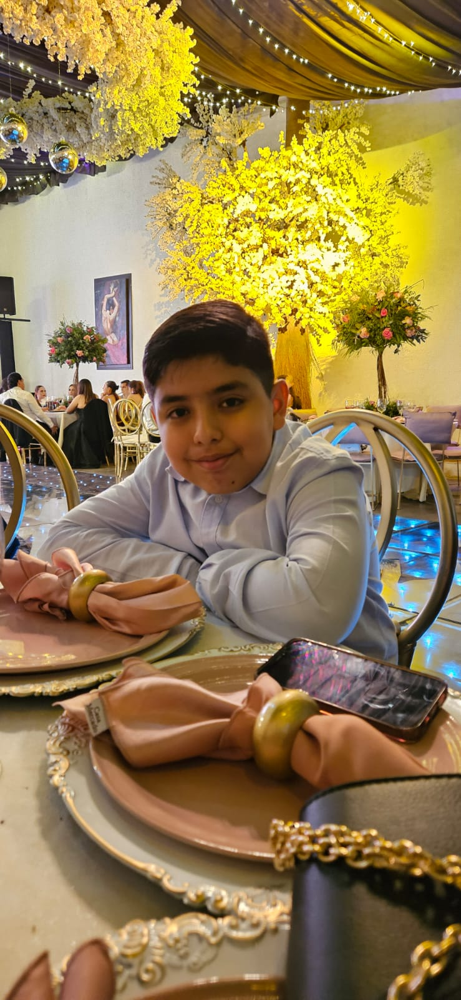
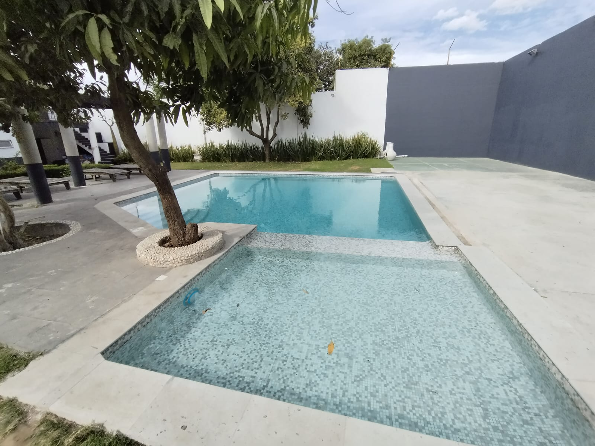

Acompáñame a recibir el Espíritu Santo y a festejar mi cumpleaños #12
Sábado 20 de junio del 2026
¡Queremos que disfrutes de la refrescante alberca!

Ceremonia Religiosa
Recepción y Bienvenida
Comida Familiar
Pastel y Celebración
Para nosotros es muy importante contar con tu presencia.
Por favor confirma antes del 1 de junio.
Confirmar por WhatsApp